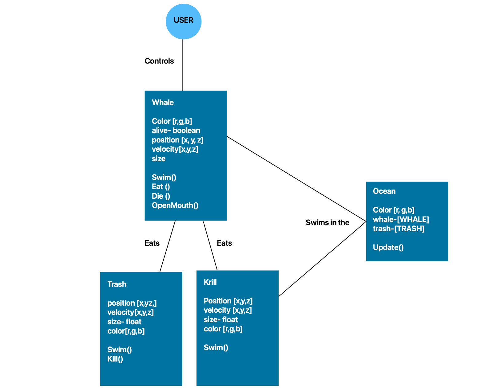

Using the UML diagram, I identified the properties and methods of each objects.
The user would control the whale so that it would eat the Krill and avoid eating the trash
while moving inside the ocean. Because this is a prototype, I decided to use simple elements to illustrate this project.
For Trash I used a green Square, circle for Krill, rectangle for whale.
I envisioned that my whale would move up and down on the left
screen but I realized that it could be more fun if the whale could
move around freely. I translated my diagram into code by seeing what
properties and methods I needed. I realized that the diagram was very necessary
process because I got to get an overview of what elements I needed to include and organize classes.
Coding Process
Challenges
The whale started to move very quickly . In the future, I would like to make it so that the health of the whale can show up on the screen and make the game end once the whale
reaches poor health.